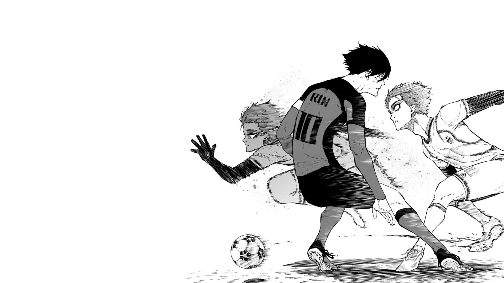

BLUE LOCK
BLUE LOCK ANIME DE FUTZIN DOS CRIA

- Inspiração na Seleção Japonesa: Criado após a frustração com o desempenho do Japão na Copa de 2018.
- Treinamento focado no ego: O anime valoriza o desenvolvimento individual acima do trabalho em equipe.
- Consultoria de futebol real: Especialistas auxiliam na criação de jogadas e estratégias plausíveis.
- Personagens baseados em astros reais: Alguns jogadores lembram Mbappé, Cristiano Ronaldo e Ibrahimović.
- Primeira obra de esporte a vencer o Kodansha Manga Award: Ganhou o prêmio em 2021 como Melhor Mangá Shonen.
- Estúdio de animação renomado: Produzido pelo estúdio 8bit, famoso por outras séries populares.
- Referências a teorias psicológicas: A filosofia do Ego Jinpachi reflete conceitos reais da psicologia esportiva.
- Aberturas e encerramentos marcantes: Músicas como “Chaos ga Kiwamaru” fizeram sucesso nas paradas.
- Repercussão internacional: Grande sucesso fora do Japão, especialmente no Brasil e Europa.
- Expansão do universo: Ganhou spin-offs como Blue Lock: Episode Nagi.
- Personagens com tipos de "arma": Cada jogador possui uma habilidade única, como velocidade ou drible.
- O “Blue Lock” existe na vida real?: Embora não oficialmente, métodos similares existem em academias profissionais.
woodan__